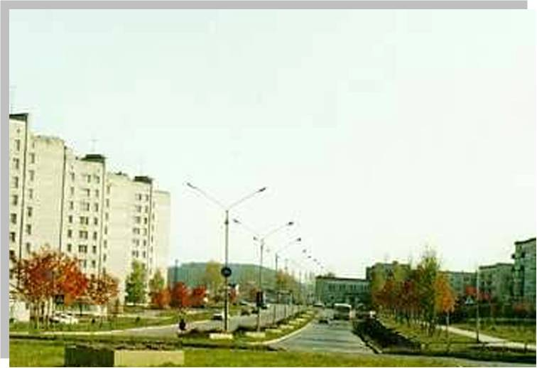

Улица Строителей
Пересёк территорию вахты - и широкая улица Строителей вводит тебя в современный город, со всех сторон надёжно прикрытый тайгой. Эта улица названа в честь первых строителей города. На этой улицы должен был быть построен памятник первым строителям города, о котором в скором времени забыли.